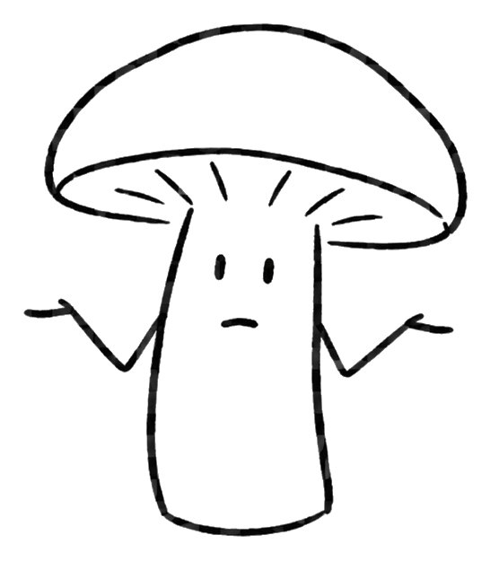

Nothing to see here.

About
What's here comes from hiking — noticing one thing eventually opens your eyes to a dozen others you'd been walking past for years. Every season I seem to pick up on something new, and the number of photos per hike has grown right along with it — what used to be a handful is now...hundreds 😱 (most times).
I like exploring all kinds of public land — state parks, game lands, county parks, small preserves, whatever's around. I do tend to gravitate toward the spots that don't get as much foot traffic.
I use my iPhone for the shots, sometimes with a clip-on lens (macro, color filter, etc.) or a mini tripod. Editing/adjustment is done via the built-in iPhone photo editor. This is mostly just for re-cropping a subject, fixing a color cast and/or enhancing contrast.
This site's just a personal project — some of what's turned up on the trail. Updates happen whenever motivation and attention span line up, which is to say: unevenly. 🙃
License
These photos are licensed CC BY-NC 4.0 — free to use, crop, or drop into whatever you're making (a flyer, a slide, a webpage) as long as it's non-commercial and credited to JTrailLens. I'd genuinely like it if any of these ended up helping a park service, nonprofit, or environmental-education project get people looking a little closer at what's around them.
Equipment
The listing below is just the tools I actually use — no affiliate links, no sponsorship, no kickback of any kind. Not intended as some personal recommendations. Only here for context.
- Xenvo Pro Lens Kit (Macro)
- For closest shots of small subjects — insects, fungi, etc.
- ULANZI Camera Tripod, Mini Flexible Stand
- For steadier shots, longer exposures, etc. Works well also for handling the phone during humid summer hikes/walks (keeping one's slimy/sweaty hands off the phone).
- Portable Universal 52mm Thread Clip for Cell Phone Camera
- For all kinds of compatible threaded filter lenses (additional macros, color filters, etc). This is for 52mm which has worked both for iPhone 11 and iPhone 17 Pro, but would need to be sure of correct size to cover whatever smartphone model and layout of the lenses.
- NEEWER 52mm Macro Close Up Lens Filter Kit
- For when the Xenvo +15 is too strong and need something inbetween. Used with above clip accessory (threading for both must match).
- Xenvo Shutterbug - Cammera Shutter Remote Control
- Avoid having to tap the smartphone/camera at all. There are much cheaper versions of these available where you can get a set, but of course the quality will suffer. This one does take a second or two to re-pair with the phone when it hasn't been used for several minutes. Will most likely improve with future models.
- 52mm Graduated Color Filters Kit 9 Pieces
- I don't use these too often other than with evening or sunset sky shots. Even then, I tend to stick to the red, pink or purple ones. Used with the above clip-on accessory (threading for both must match).
- NEEWER N55CR Upgraded 80.7" Carbon Fiber Camera Tripod
- Very durable and seems well made though can be a bit heavy to lug around. I only use this for winter hiking night shots given the limited daylight. Has been in all kinds of wet/snowy/freezing conditions and has held up.
- NEEWER Basics 2 Pack Magnetic Handheld Light Wand
- Excellent little things. Have used a lot during winter night hikes for lighting up ice/snow formations. Sometimes even keep one with me so on dark rainy days in the woods for providing some additional light for underside mushroom shots. These have gotten wet numerous times and I have even stuffed right into snow without problems. The adjustable color, brightness and color temperature make it nice even as a basic reading light.
- Koala Lens Cleaning Cloth (Pack of 6)
- I keep one of these in my pocket almost always on walks/hikes so can easily clean off the smartphone lenses or accessory lenses on those humid/rainy days. Have only been switching between the same two cloths and just wash after several uses.